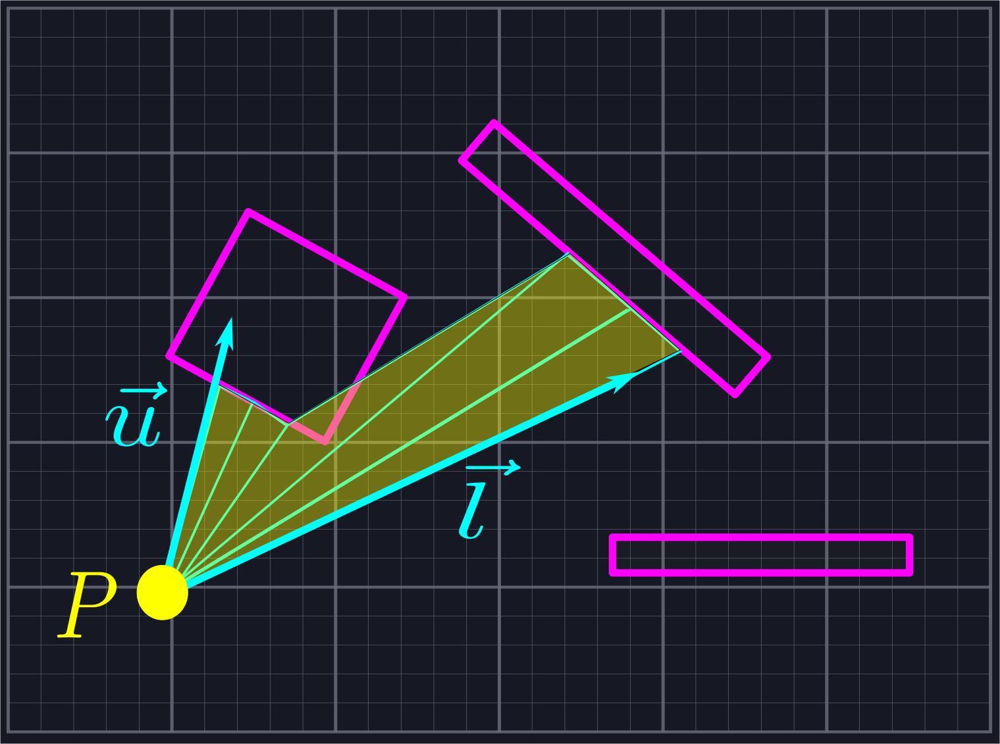
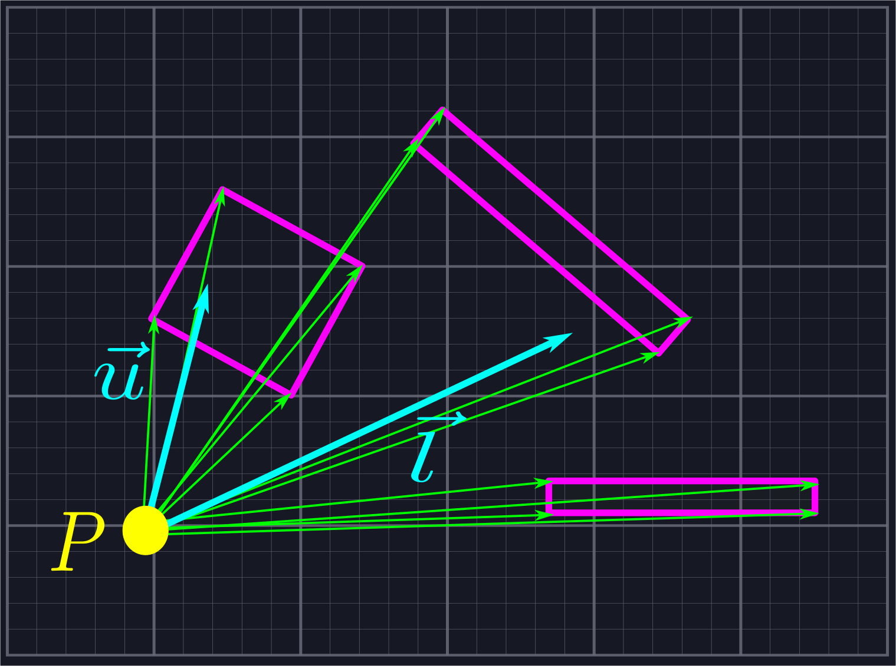
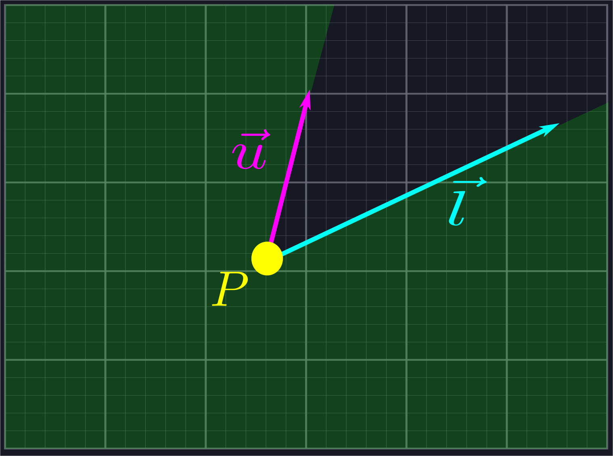
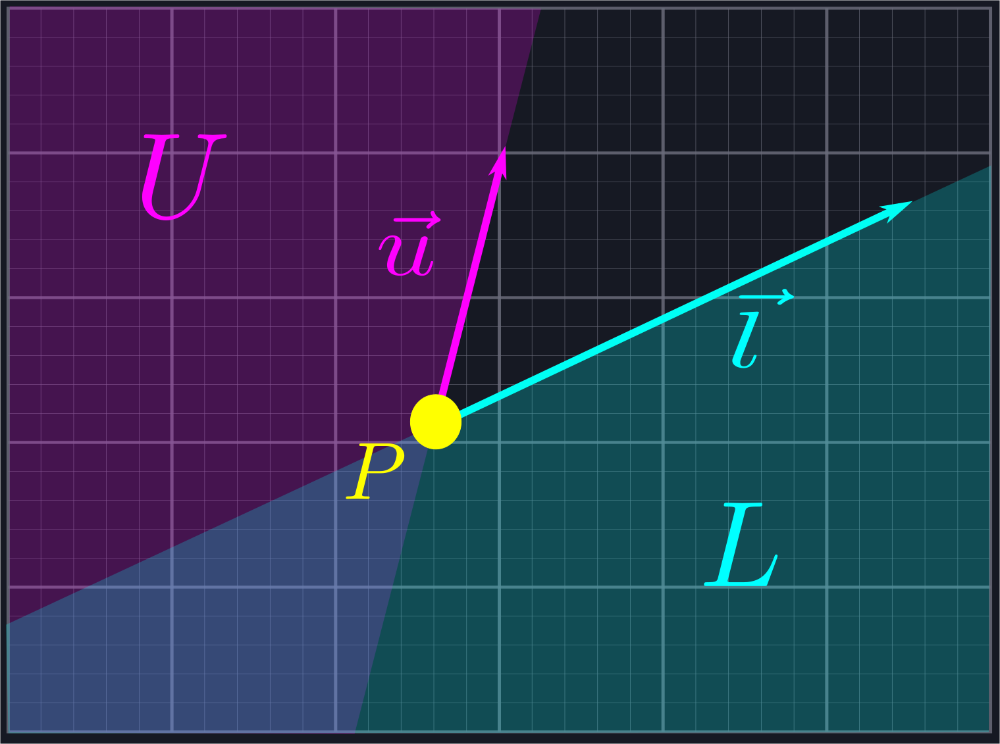
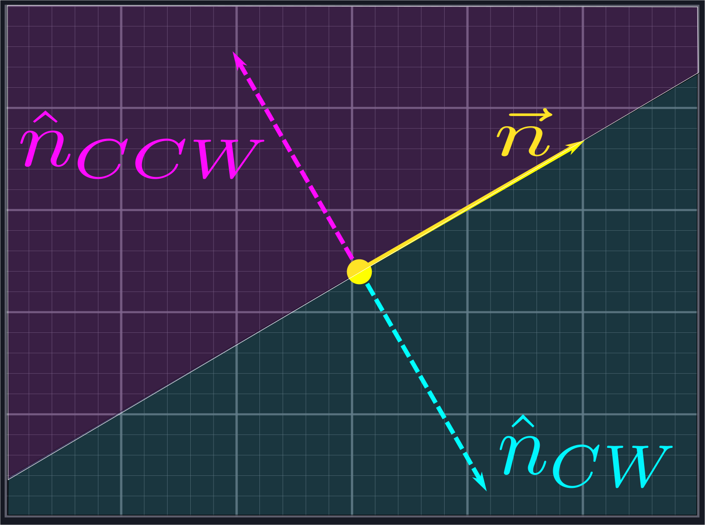

Sending out Rays
As observed in our references, an initial, naive approach to the line of sight problem is to simply cast out a large number of rays that slice our viewing area into small sections. We then measure the closest point where each ray intersects a line segment and connect the dots.

For some use cases this approach might be good enough. However, it has a fatal flaw: the only way to improve its accuracy is to send out more and more rays. This increases the amount of computations we need to do drastically for increasingly limited improvements in accuracy.
Fortunately, we can be more circumspect in how we send out rays. Instead of shooting them out indiscriminately, we shall throw one in the direction of \(\vec{l}\), one in the direction of \(\vec{u}\), and one in the direction of each endpoint of each line segment.

For this to work, we need to be able to tell whether or not a ray generated in this manner is within our viewing area. If it isn't, then we should not add it to our list, as any further computations on it are unnecessary. The most straightforward way to do this would be to measure the angle of each ray, and determine if its angle is between the angles of \(\vec{l}\) and \(\vec{u}\). However, our goal is to implement a line of sight algorithm without resorting to expensive operations like arctangent, so we'll handle this exclusion using vectors instead.
Rejecting Rays
We want to use vectors to reject rays which live in the shaded region below.

This region is the combination of two half-planes: the half-plane \(L\), which is all of the points to the right of the line defined by \(\vec{l}\), and the half-plane \(U\), which is all the points to the left of the line defined by \(\vec{u}\).

If a ray lies in either one of these planes, then we want to exclude it. We can use normal vectors to do this. A normal vector \(\hat{n}\) of a line defined via a vector \(\vec{n}\) is a vector which is perpendicular to the line, i.e. such that \(\hat{n}\cdot\vec{n} = 0\).
This is analgous to the normal vector of a plane in three dimensions.
Each line has two normal directions: the first, \(\hat{n}_{CCW}\), is obtained by rotating \(\vec{n}\) by \(\frac{\pi}{2}\) in the counterclockwise direction, and the other, \(\hat{n}_{CW}\), is obtained by rotating in the same amount in the clockwise direction. Any vector \(\vec{a}\) to the left of the line defined by \(\vec{n}\) will satisfy \(\vec{a}\cdot\hat{n}_{CCW}>0\), and any vector \(\vec{b}\) to the right of the line defined by \(\vec{n}\) will satisfy \(\vec{b}\cdot\hat{n}_{CW}>0\).

We can use this to reject the rays outside of our desired region. Given a vector \(\vec{r}\) representing one of our potential rays, we will compute \(\hat{u}_{CCW}\cdot\vec{r}\) and \(\hat{l}_{CW}\cdot\vec{r}\). If the first quantity is positive, then we know \(\vec{r}\) is inside \(U\). If the second quantity is positive, then we know \(\vec{r}\) is inside \(L\). In either case, it is not in the region we are looking for and we exclude it from our search.
For this to work, it is important that the angle between \(\vec{l}\) and \(\vec{u}\) is no larger than \(\pi\). However, we can process angles larger than \(\pi\) by applying this process to the complement angle and negating the result.
The careful reader might have an objection to this process: rotating vectors sounds like trigonometry. Fortunately, as we're only rotating by right angles, we can avoid using any trig whatsoever! Given \(\vec{n}=\langle p,q\rangle\), we can compute the normal vectors via \(\hat{n}_{CCW}=\langle-q,p\rangle\) and \(\hat{n}_{CW}=\langle q,-p\rangle\).
The skeptical reader can verify these facts using rotation matrices or by thinking of vectors as complex numbers and performing multiplication by \(i\) and \(-i\) respectively.
Putting This Into Practice
Below is the actual code that handles this ray rejection process. Point is a simple struct with floating point values for its components x and y. We use this struct to represent both points in space and vectors. The ray_between function is a member of this struct which checks if the vector is between the provided values for upper and lower. FLOATING_POINT_ERROR should be thought of as basically zero.
Floating point comparisons are a notoriously fickle issue best avoided by allowing for small amounts of error, which is why we do not compare to
0.0. We have definedFLOATING_POINT_ERRORto be0.0001, although there is no specific rational behind this compared to other arbitrary values like0.001or0.00001.
#![allow(unused)] fn main() { //Assumes the angle from lower to upper is less than pi. Swap lower and upper and negate it for larger angles //Returns false if self is not between lower and upper, true if it is pub fn ray_between(&self, lower: Point, upper: Point) -> bool { //Dot product of upper rotated ccw by pi/2 let upper_component = self.y * upper.x - self.x * upper.y; if upper_component > FLOATING_POINT_ERROR { return false; } //Dot product of lower rotated cw by pi/2 let lower_component = self.x * lower.y - self.y * lower.x; if lower_component > FLOATING_POINT_ERROR { return false; } return true; } }
The only pieces of this code that might cause some confusion are the dot product calculations. Rather than adding overhead by allocating new Points for the normal vectors and calling the dot product function on them, we perform the calculations manually to save time. This is done using the characterization of the normal vectors described in the last paragraph of the previous section.
We write some unit tests to verify that our code is doing what we want.
#![allow(unused)] fn main() { #[test] fn ray_between() { let ray1 = Point { x: 2.5, y: 0.0 }; let ray2 = Point { x: 0.0, y: 1.0 }; let ray3 = Point { x: -1.0, y: 2.0 }; let ray4 = Point { x: -1.0, y: -1.1 }; let ray5 = Point { x: 3.7, y: -2.0 }; let ray6 = Point { x: -2.0, y: 0.0 }; let ray7 = Point { x: 0.0, y: -30.0 }; let ray8 = Point { x: 10.0, y: 1.0 }; assert!(ray8.ray_between(ray1, ray2)); assert!(ray6.ray_between(ray3, ray4)); assert!(ray5.ray_between(ray7, ray1)); assert!(ray4.ray_between(ray3, ray5)); assert!(!ray3.ray_between(ray1, ray2)); assert!(!ray1.ray_between(ray3, ray4)); assert!(!ray2.ray_between(ray7, ray1)); assert!(!ray8.ray_between(ray3, ray5)); } }
We now have everything we need to handle the first section of our line of sight algorithm.
#![allow(unused)] fn main() { use super::space::{Point, Segment, Triangle}; pub fn generate_line_of_sight(location: Point, upper: Point, lower: Point, segments: &Vec<Segment>) -> Vec<Triangle> { let mut rays: Vec<Point> = Vec::new(); rays.push(lower); rays.push(upper); //Collect the rays we need to project for segment in segments.iter() { let ray = segment.start - location; if ray.ray_between(lower, upper) { rays.push(ray); } let ray = segment.end - location; if ray.ray_between(lower, upper) { rays.push(ray); } } //Sort the rays from lower to upper Point::sort_from_angle(&mut rays, lower); // //Actually create the triangles let mut line_of_sight: Vec<Triangle> = Vec::new(); for i in 0..rays.len()-1 { let mut shortest_current = 0.0; let mut shortest_next = 0.0; for segment in segments.iter() { let cast_current = segment.raycast(location, rays[i]); let cast_next = segment.raycast(location, rays[i + 1]); if cast_current.is_some() && cast_next.is_some() && (shortest_current == 0.0 || cast_current.unwrap() < shortest_current) { shortest_current = cast_current.unwrap(); shortest_next = cast_next.unwrap(); } } line_of_sight.push(Triangle::new(location, location + rays[i].scale(shortest_current), location + rays[i + 1].scale(shortest_next))); } return line_of_sight; } }
We create a new vector (Rust's version of a resizable array) to store our rays in, then add upper and lower to it. From here, we iterate over each segment in the vector of Segements which is passed into the function. Segment is a struct simply containing a start Point and an end Point. For each segment, we generate a ray between our location and both endpoints. We use ray_between to only accept rays which are between upper and lower in our collection.
Now we're ready to move on to the second part of our algorithm: sorting this collection of rays by angle.
Potential Improvements
- If your line segments define a sensible collection of closed polygons, then we can skip the second ray portion because each point should be the beginninng of some line segment.
- Before adding rays to our collection, we could additionally check to ensure that we are not adding in multiple rays which point in the same direction, as these will be redundant. This suggestion has been omitted from the included code to avoid generating a debate about what the best data structure(s) for handling such behavior might be.